A couple of the attractions really emphasize live action like Poseidon's Fury and the Eighth Voyage of Sinbad where actors on a large stage put on a very tongue in cheek show with stunts and pyrotechnics.
loading...
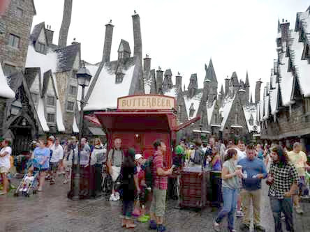
loading...
loading...
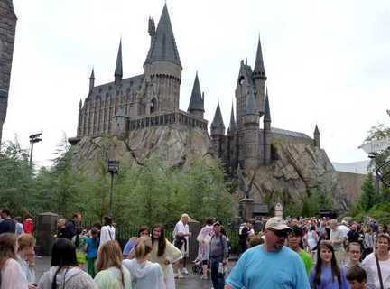
loading...
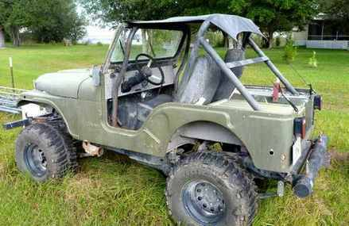
loading...
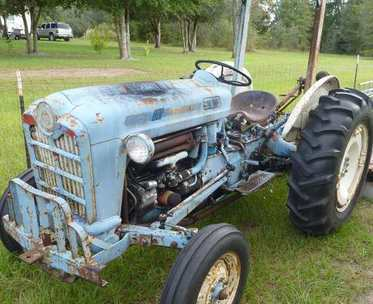
The barn and a couple of Miros toys
loading...
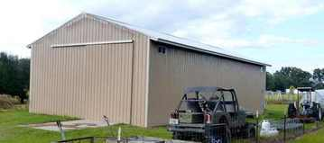
loading...
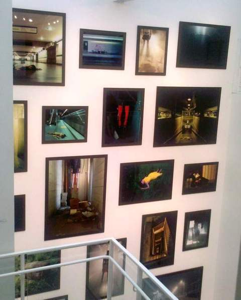
loading...
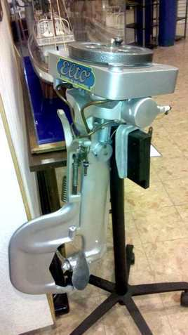
loading...
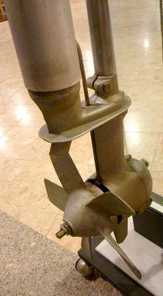
loading...
An artistic installation on the Riverwalk
loading...
loading...
They make a lot of beer here.
loading...
Bottles flowing down the line
loading...
5 Nov 2011 So now it's time to move on to Savannah. I finally got to go somewhere by train instead of bus . I have to tell you it was a nice ride. So much legroom! and so much smoother ride than the bus. There were electrical outlets on this train (not all cars have that) but no public WiFi. Had I wanted to I could have tethered my computer to the phone but I didn't need to. I did use the phone to check the map and make a call and t-mobile coverage was fading in and out quite a bit so data was spotty.
loading...
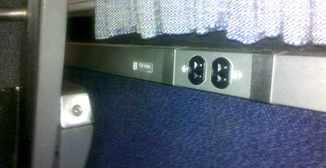
loading...
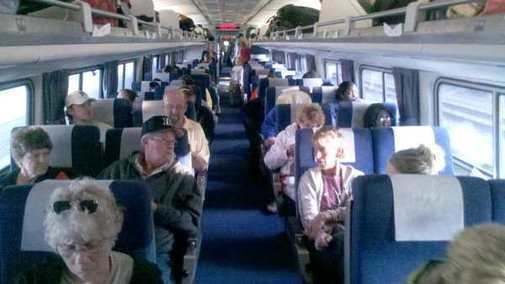
loading...
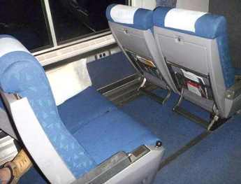
loading...
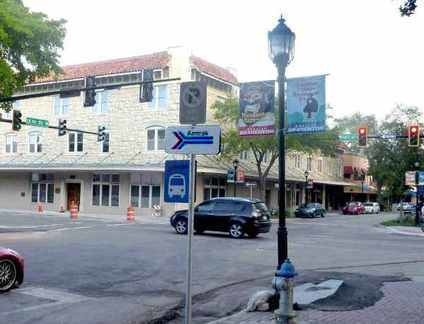
loading...
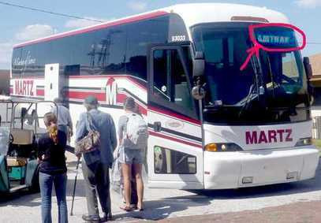
27 Oct 2011 As I mentioned there are not many Hostels in the U.S. but I found one in Orlando. $12 per person per night. The place was kind of an aging resort hotel on a lake with a very ramshackle college dorm feel. There were grills and a big bonfire pit out back. A common kitchen, mark your food if you use the fridge. The pool had a big peace sign in the bottom of it (Oh so hippy)
The room had bunk beds with 8 bunks per room (wow). I only saw two other guys in the room and hardly spoke to them. It must be off season, the place was very empty and I didn't get much a feel for it. I guess when it's busy most people only go to the room to sleep and spend waking hours out seeing the sights or hanging around in the common area, which seemed like it had the potential to be fun but the place was dead when I was there.
loading...
There was a HUGE Dr. Seuss land, (Great if ya got small kid's, didn't do much for me) and Jurassic Park Ride and other stuff. I kind of liked the Super Hero Island.
I wasn't quite up to the incredible hulk roller coaster but I did ride Dr. Dooms Fear Fall.
The concept is simple, they haul you up to the top of one of the towers - and drop you. You got a problem with that?
2 Nov 2011 I have always enjoyed hanging out with Miro and Sue. They are country folk now. She keeps chickens which provide her with fresh eggs. He has a big barn full of projects and tractors and such. They aren't actually farming but Sue does garden and she has a big green house where she is growing exotic plants to sell once they get big enough. Miro with his technical background has automated the monitoring and ventilation system to regulate the temperature in the greenhouse.
My first night they took me to a neighbors house where they like to have Bonfires at night. Conversation turned to weighty an important matters. Such as how to get skunk stink off your dog. Yeah, the European debt crisis can wait, these are far more immediate and important issues.
loading...
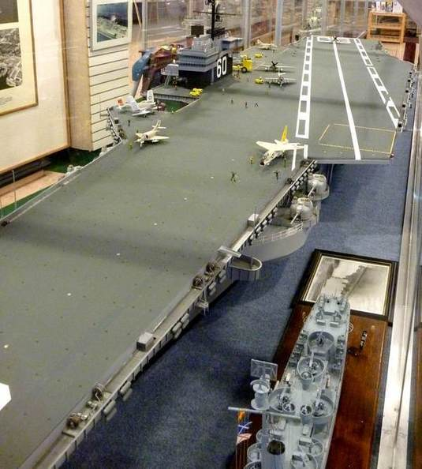
3 Nov 2011 At Jacksonville Landing (a riverfront shopping mall reminiscent of Bayside Market in Miami) I found the Jacksonville Maritime Museum. It has some impressive models of ships of all kinds.
I was more fond of a couple antiques outboard motors. Anyone
familiar with the behemoth motors they make today will appreciate how
the whole concept has changed.
4 Nov 2011 Jacksonville has a Budweiser Brewery and bottling plant so I that afternoon I wanted to take the free tour. It was quite a long ride on the city bus then a long walk from the stop but I made it to the place.
I found out there are two tours, a casual walk in tour (the one I took) and a longer "Brewmaster" tour given only twice a day requiring per-registration. For the Brewmaster tour they advise you to bring a jacket because you will walking around in the 40 Deg f (4 C) cold side and you need closed shoes. Next time I will take that one.
The tour I took was kind of superficial with a video (mostly a long commercial) and you looked through windows at the huge tanks (quite static) and the bottling equipment (lot's of movement there). Both tours end in at the hospitality lounge with free beer. You can try any kind they make and there are quite a few. But there is a strict limit on how much you can drink so choose wisely.
loading...
Packaging bottles
loading...
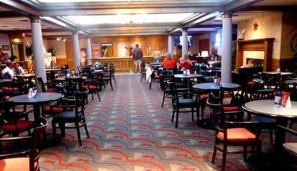
I'm not much of a beer drinker but, well, after all, it was FREE.
28 Oct 2011 Years ago Eddas and I visited Orlando several times, to the point where I was overloaded with the them park experience. Nevertheless it had been years since I was at one. Universal has a second park now "Islands of Adventure". That's where the Harry Potter ride is. I'm not such a big Potter fan but if I was going to spend a day it was a park I had not seen.
The park itself has a pretty impressive ambiance. Sometimes the attraction does not live up to the setting outside, like the case of this ancient temple set for Poseidon's Fury
loading...
Personally I am more interested in how the rides work than in getting caught up in
the fantasy. The Potter ride was not so different from Star Wars in
Universal Studios. A motion simulator. Four seats, similar to roller
coater seats with a pull down harness. The seats pitch and roll. They
alternately swing around into live action stuff like a menacing group of not-so-convincing dementors, then into a large curved video screen as
you escape by flying along with Harry and company on their brooms. The
seat pitches down as you dive down in the video etc. It's not a bad ride, exciting, but to
me there was nothing really new since Star Wars, except that the group
of seats was smaller and it makes it feel a bit more intimate.
A ghostly projected Harry and company deliver the back story from a balcony while you wait to ride
As you might expect the Hogwarts "Neighborhood" is pretty convincing. (Snow in Orlando?)Yes, I had some Butter Beer, the frozen version. Think Butterscotch flavored Icee with a little whipped light butterscotch sauce on top looking sort of like beer foam.
loading...
loading...
3 Nov 2011
I don't know anyone in Jacksonville so I tired to find a host through the couchsurfing.org website. No luck. It seems that to use couchsurfing successfully you really need to plan a bit in advance, one week minimum , preferably 2 weeks and that has not been my style so far. But when couchsufing fails hotwire and priceline step in. I got a room just across the river and a short bus ride from downtown.
I checked out the Jacksonville Museum of Contemporary Art MOCA. The exhibits were all photography at that time. One display that struck me was by Melanie Pullen called "High Fashion Crime Scenes". It featured recreations of murder scenes from actual police files but the models were all dressed in high fashion clothing. Photography in the exhibit was prohibited but in the course of fiddling with my phone I must have accidentally snapped a few frames.
loading...
4 Nov 2011
The next day I tried to visit The Cummer Museum of Art & Gardens but they were closed for holiday decoration. (No word of this on the website - shame). So I took a walk along the very well maintained but apparently underused river walk back to downtown.
In crossing the pedestrian bridge over the railroad I saw these little shelters made in a kind of industrial high tech styling. Very rugged looking and vandal resistant. You would think they would provide a shelter from rain or sun if a walker wanted to take a break. But when I reached one I saw the roof was a grid and would provide no shelter from sun or rain. They served no function at all beyond an architectural accent.
loading...
How's this for legroom? The footrests can fold up
Power outlets but no WiFi on this line
Inside Sues greenhouse
29 Oct 2011
Once I was done visiting Harry Potter and Spiderman it was off Lake City Florida to visit Miro and his lovely wife Sue. Miro worked with me when I first hired in at Schering. Boarding the bus in Orlando was a different experience. It was the first and only time they actually searched bags going into a bus terminal. I was astounded. I actually had a knife confiscated. Yes, since I was avoiding flying I had bought the cheapest steak knife I could get at Publix knowing that I would have to dispose of it next time I got on a plane. But it did not make it that far.
The bus itself was older, no WiFi or electric outlets, but it was perfectly alright and the ride was comfortable.
I better add a footnote here about the subsequent bus I took when I left Lake City. It was the most crowded I had been on, it was also the first to run late (not much, only 20 minutes) and it um , how can I say this, it smelled bad. Fortunate for me that leg was only a 1 hour ride and I got through it okay. Overall my experience with Greyhound has been quite good but I guess you can get a stinker now and then.
I think I enjoyed the Spiderman ride as much as anything. Another sort of simulated motion ride. It was kind of a hipper ride with a rock music sound track. Maybe it's just that I like 3-D stuff and this ride involved 3-D glasses. As you pass through you are menaced by various 3-D cartoon villains, only to be rescued by your friendly neighborhood Spiderman.
loading...
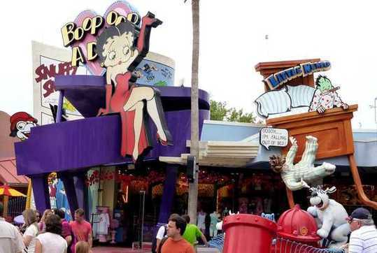
Amtrak Bus Sign in downtown Bradenton
As far as Savannah itself goes. It far exceeded my expectation but this page is getting long so and I will cut here and start a new page with Savannah.
UPDATE: I am informed that Savannah has some very ROUGH areas that should be avoided. Somehow I missed them, I must have gravitated to the touristy area, Including the most beautiful thing to see in the city, the cemetery.
Posting 4a Savannah, including Bonaventure Cemetery HERE
Welcome to Dispatch # 3 27 Oct - Nov 5, 2011 Orlando and Universal Adventure Island Bradenton with Miro and Sue Jacksonville and the Budweiser Brewery
27 Oct 2011
Did you know that Amtrak also operates buses as well as trains? Yes they are feeder buses to extend the train service. One goes to Bradenton. The schedule was much more attractive for me than the Greyhound but it turns out that you can only book the bus along with some train travel. But I was able to book one stop north of Orlando (Winter Park), then neglect to board the train. The price was comparable to Greyhound, in fact a couple dollars cheaper .